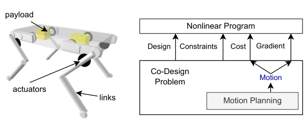
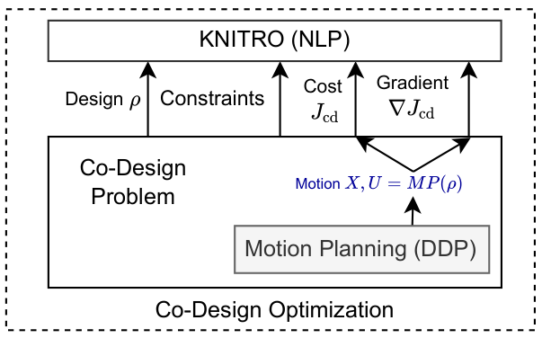
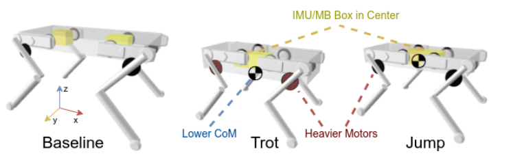
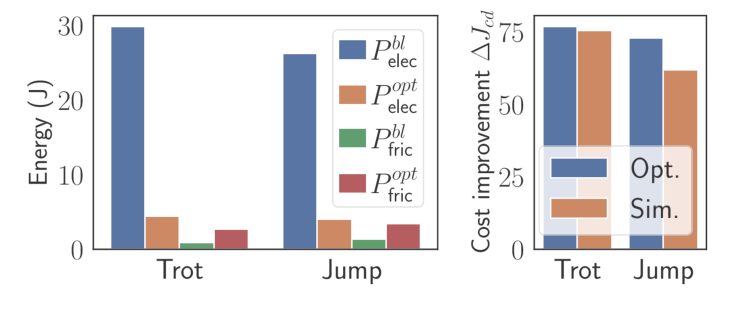
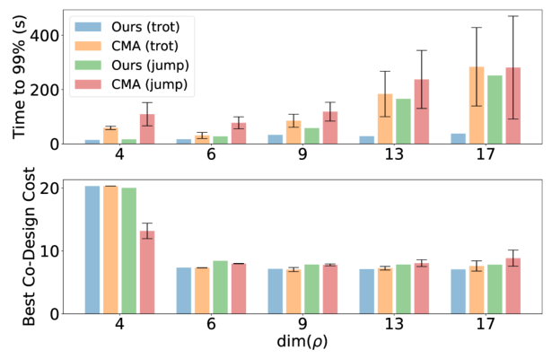

Background & Motivation
這篇提出一個雙層(bilevel)機器人共同設計(co-design)框架:下層用 Crocoddyl 的 Box-FDDP 對每個候選設計解一個含全身動力學、接觸切換、摩擦錐與扭矩上限的最佳控制問題;上層把「設計 → 最佳動作 → 能耗」整條鏈當成黑箱函數,用平行的單邊有限差分取梯度,交給通用 NLP 求解器 KNITRO,在硬性設計約束下最小化馬達能耗。在 12 自由度的 Solo 四足上,為 trot 與 jump 各找到一個能耗約降 73–77%(PyBullet 驗證約 62–75%)的設計。
The paper proposes a bilevel robot co-design framework: the lower level uses Crocoddyl's Box-FDDP to solve, for each candidate design, an optimal control problem with full-body dynamics, contact switches, friction cones and torque limits; the upper level treats the whole chain "design → optimal motion → energy" as a black box, gets its gradient by parallel one-sided finite differences, and hands it to the general-purpose NLP solver KNITRO, minimizing motor energy under hard design constraints. On the 12-DoF Solo quadruped it finds trot and jump designs that cut energy by about 73–77% (about 62–75% when re-checked in PyBullet).

如果只有 30 秒In 30 seconds
- 問題 — 共同設計需要「能規劃物理可行的動態動作」與「能加任意硬性設計約束」兩者兼得。既有做法各缺一角:取樣法(CMA-ES)無法處理硬約束、維度一高就難收斂;單一大 NLP 太複雜且不模組化;敏感度分析法需為特定 planner 手推、且多以懲罰代替物理約束。
- Problem — Co-design needs both "planning physically feasible dynamic motions" and "imposing arbitrary hard design constraints." Each existing approach misses one: sampling methods (CMA-ES) cannot do hard constraints and struggle as dimension grows; a single giant NLP is complex and non-modular; sensitivity-analysis methods need planner-specific derivations and often replace physics with penalties.
- 方法 — 上層 KNITRO + 下層 Box-FDDP。設計向量 \(\rho\in\mathbb{R}^{17}\)(腿長、肩關節安裝點、機身寬高深、兩個電子盒位置、馬達質量、減速比);每個梯度只需 \(\dim(\rho)+1=18\) 次平行的下層求解;成本是由致動器回歸模型算出的馬達電能 + 傳動摩擦損耗。
- Method — KNITRO on top, Box-FDDP below. Design vector \(\rho\in\mathbb{R}^{17}\) (leg lengths, shoulder attachment points, base width/height/depth, positions of two electronics boxes, motor mass, gear ratio); each gradient needs only \(\dim(\rho)+1=18\) parallel lower-level solves; the cost is motor electrical energy + transmission friction loss from an actuator regression model.
- 結果 — Trot:馬達 0.053→0.179 kg、減速比 9→16.06、全機 2.42→3.81 kg;Jump:0.168 kg、17.33、3.59 kg。兩者能耗皆大降約 7 成,主因是用較大的摩擦損耗換掉大量焦耳熱。與 CMA-ES 相比最佳成本相近、trot 收斂更快;17 維 jump 最壞情況 252 s vs 600 s。
- Results — Trot: motor 0.053→0.179 kg, gear ratio 9→16.06, total 2.42→3.81 kg; Jump: 0.168 kg, 17.33, 3.59 kg. Both cut energy by roughly 70%, mainly by trading a little more friction loss for much less Joule heating. Versus CMA-ES: similar best cost, faster on trot; worst case on the 17-D jump 252 s vs 600 s.
領域脈絡Field context
傳統機器人設計是「機構工程師畫圖 → 控制工程師規劃動作 → 發現不夠好再改圖」的人工迭代(例如 HyQ 的設計)。共同設計(co-design)想把這個迴圈自動化:設計者只需指定設計參數、設計約束、任務、評估指標,演算法同時找出最佳設計與最佳動作。
Traditional robot design is a manual loop: "mechanical engineers draw → control engineers plan motions → not good enough, redraw" (e.g., the design of HyQ). Co-design aims to automate this loop: the designer only specifies design parameters, design constraints, tasks, and evaluation metrics, and the algorithm finds the best design and motion together.
要讓設計改善「真實」,內層必須能規劃考慮全身動力學與致動極限的可行動作——這正是 Crocoddyl(多接觸最佳控制框架,快到可做 MPC)這類模型派工具的強項。本文的定位就是:把現成的頂尖 motion planner 原封不動地塞進設計優化迴圈。
For design improvements to be "real," the inner level must plan feasible motions that respect full-body dynamics and actuation limits—exactly the strength of model-based tools like Crocoddyl (a multi-contact optimal-control framework fast enough for MPC). This paper's position: plug an off-the-shelf state-of-the-art motion planner, unmodified, into the design-optimization loop.
這是一篇系統整合型的貢獻:沒有發明新的最佳控制演算法,也沒有推導解析敏感度,而是抓住一個工程上的不對稱——設計只有 17 維、動作卻有 9163 維——於是用最笨但最通用的有限差分,換來「任何 planner 都能接、任何設計約束都能加」的模組性。值不值得,取決於你更在乎精確梯度還是工程彈性。[導讀補充]
This is a systems-integration contribution: no new optimal-control algorithm and no analytic sensitivity derivation. Instead it exploits an engineering asymmetry—the design has 17 dimensions, the motion 9163—and uses the dumbest but most general tool, finite differences, to buy modularity: "any planner plugs in, any design constraint can be added." Whether that is worth it depends on whether you value exact gradients or engineering flexibility more. [guide note]
核心洞見 · KEY INSIGHTSKEY INSIGHTS
值得帶走的不是「Solo 可以省 7 成電」,而是底下這幾個觀念:
What is worth taking away is not "Solo can save 70% energy" but these ideas:
- 把 motion planner 當成「可微的黑箱模組」。 上層只需要 \(\rho\mapsto J_{cd}(\rho,\mathrm{MP}(\rho))\) 這個函數值與其梯度;下層換成任何可微的 planner 都不用改碼。這是本文自稱 versatile 的真正含意——模組上的通用,而非任務上的通用。
- Treat the motion planner as a "differentiable black-box module." The upper level only needs the value and gradient of \(\rho\mapsto J_{cd}(\rho,\mathrm{MP}(\rho))\); swapping in any differentiable planner needs no code change. That is the real meaning of the paper's versatile—versatile as a module, not versatile across tasks.
- 低維設計 × 高維動作的不對稱,讓有限差分變便宜。 trot 實驗 \(\dim(\rho)=17\)、\(\dim(m)=9163\);一次梯度 = 18 次可平行的 DDP 求解,比對 9163 維動作做敏感度分析簡單得多。
- The low-dim design × high-dim motion asymmetry makes finite differences cheap. In the trot experiment \(\dim(\rho)=17\), \(\dim(m)=9163\); one gradient = 18 parallelizable DDP solves—far simpler than sensitivity analysis through a 9163-D motion.
- 硬約束分層放:物理在下層、設計在上層。 摩擦錐、扭矩上限、接觸動力學由 DDP 保證;電子盒不碰撞、肩關節在機身內等設計約束由 KNITRO 以硬約束處理——這是 CMA-ES 只能用懲罰項做的事。
- Layer the hard constraints: physics below, design above. Friction cones, torque limits and contact dynamics are guaranteed by DDP; design constraints such as non-colliding electronics boxes and shoulders inside the base are handled as hard constraints by KNITRO—something CMA-ES can only do with penalties.
- 能耗的大頭在致動器,而不是形態。 Fig.4 中只優化腿長(4 維)時最佳成本約 20,加入馬達質量與減速比(6 維)後驟降到約 7–8,之後再加機身與電子盒(9→17 維)幾乎不再下降。[導讀補充:由 Fig.4 讀圖]
- Most of the energy lever is the actuator, not the morphology. In Fig.4, optimizing only leg lengths (4-D) gives a best cost of about 20; adding motor mass and gear ratio (6-D) drops it to about 7–8, and adding base and electronics boxes (9→17-D) barely lowers it further. [guide note: read from Fig.4]
- 用摩擦換焦耳。 優化器選擇更重的馬達 + 更高的減速比:焦耳熱 \(\propto \tau^2/K_m\) 隨兩者快速下降,代價是與馬達轉速成正比的傳動摩擦上升——結果電能大降、摩擦小增。
- Trade friction for Joule heating. The optimizer picks heavier motors + higher gear ratios: Joule heat \(\propto \tau^2/K_m\) falls quickly with both, at the cost of transmission friction that grows with motor speed—so electrical energy drops a lot while friction rises a little.
- 局部梯度法「追得上」CMA-ES,但從沒贏過它的解。 作者坦承 CMA-ES(族群 50)在所有問題上取得相同或更低的成本;本文的優勢是時間與確定性,而非解的品質。
- The local gradient method "keeps up with" CMA-ES but never beats its solutions. The authors admit CMA-ES (population 50) reaches the same or lower cost on every problem; the edge here is time and determinism, not solution quality.
Problem Diagnosis
現況 vs 痛點Status quo vs pain points
| 現有做法Existing approach | 它的痛點Its pain point |
|---|---|
| 人工迭代Manual iteration (HyQ [1]) | 機構設計 ↔ 動作規劃來回改,需要兩個領域的專家,對動態機器人尤其困難。Back-and-forth between mechanical design and motion planning; needs experts in both, especially hard for dynamic robots. |
| 取樣式 co-designSampling-based co-design (CMA-ES: Wampler, Digumarti, Ha 2016, Vitruvio, Fadini 2021) | 可用不平滑的 planner,但設計約束只能是軟懲罰、要調權重;複雜度隨設計維度急遽上升(維度詛咒),難擴展到多任務、多環境。Can use non-smooth planners, but design constraints are only soft penalties requiring weight tuning; complexity grows steeply with design dimension (curse of dimensionality), hard to scale to multiple tasks/environments. |
| 單一 NLP 同時解One joint NLP (Mombaur, Buondonno, Spielberg) | 動作 + 設計塞進一個大 NLP,演算法複雜度高;每加一個設計需求就要改 motion planning 的寫法——不模組化。Motion + design in one big NLP: high algorithmic complexity; every new design requirement means rewriting the motion-planning formulation—non-modular. |
| 敏感度分析Sensitivity analysis (Ha 2018 IFT; Desai adjoint; Geilinger) | Ha [16] 一次只優化一個使用者選定的參數;[17]–[19] 對動作物理只用懲罰成本而非硬約束,可能違反物理;且都不支援設計約束,更新規則還要針對 planner 手推。Ha [16] optimizes one user-picked parameter at a time; [17]–[19] use penalty costs instead of hard physics constraints, risking physics violations; none support design constraints, and the update rule must be hand-derived per planner. |
作者因此訂出三項需求:(1) 對連續設計變數可定義任意成本與約束;(2) motion planning 是一個模組;(3) 能用處理動態足式運動、含動作約束的頂尖 planner。
Hence three requirements: (1) arbitrary costs and constraints on continuous design variables; (2) motion planning as a module; (3) use state-of-the-art planners for dynamic legged motion with constraints on the motion.
Gap 表 — 誰缺什麼,本文怎麼補Gap table — who lacks what, and how this paper fills it
| 方法Method | 限制Limitation | 本文如何補上How this paper fills it |
|---|---|---|
| CMA-ES co-design | 軟約束;每代 50 次 planner 呼叫;非確定性。Soft constraints; 50 planner calls per generation; non-deterministic. | KNITRO 處理硬性設計約束;每步只需 \(\dim(\rho)+1\) 次呼叫;確定性。KNITRO handles hard design constraints; only \(\dim(\rho)+1\) calls per step; deterministic. |
| 單一大 NLPJoint NLP | 複雜、不模組化。Complex, non-modular. | 分成上下兩層,下層 planner 原封不動,可直接用 Crocoddyl 的結構化求解效率。Split into two levels with the lower-level planner untouched, directly reusing Crocoddyl's structure-exploiting efficiency. |
| IFT / adjointIFT / adjoint | 要針對 planner 推導;懲罰式物理;無設計約束。Planner-specific derivation; penalty physics; no design constraints. | 直接對 \(\rho\mapsto J_{cd}\) 做數值微分,不假設 planner 形式;下層保留硬性控制上限(Box-FDDP)。Numerically differentiate \(\rho\mapsto J_{cd}\) directly with no assumption on planner form; the lower level keeps hard control limits (Box-FDDP). |
注意本文的「痛點」大多是工程可用性(模組化、約束表達力、可擴展性),而不是「既有方法找不到好設計」。這也意味著評估的重點應是同樣的解品質下,是否更快、更好用——而實驗確實是這樣設計的(Fig.4 比時間,並承認最佳成本相近)。[導讀補充]
Note that the "pain points" here are mostly about engineering usability (modularity, constraint expressiveness, scalability), not "existing methods find bad designs." So the right evaluation is at equal solution quality, is it faster and easier to use—which is indeed how the experiments are set up (Fig.4 compares time and concedes similar best costs). [guide note]
Core Method
整體流程(Algorithm 1)Pipeline (Algorithm 1)

步驟 1:把 co-design 寫成雙層優化Step 1: co-design as bilevel optimization
設計向量 \(\rho\) 編碼連桿長度、機身形狀(寬、高、深)、酬載配置與致動器參數(馬達質量、減速比)。上層問題(Eq.1):
The design vector \(\rho\) encodes link lengths, base shape (width, height, depth), payload placement and actuator parameters (motor mass, gear ratio). The upper-level problem (Eq.1):
關鍵在第二行:\(X,U\) 不是自由變數,而是下層 OCP 的解。\(X=\{x_0,\dots,x_N\}\)、\(U=\{u_0,\dots,u_{N-1}\}\),\(N\) 為規劃 horizon(屬於任務描述)。把 MP 視為 \(\rho\) 的非線性函數後,上層實際上只是一個關於 \(\rho\) 的低維 NLP。
The key is the second line: \(X,U\) are not free variables but the solution of the lower-level OCP. \(X=\{x_0,\dots,x_N\}\), \(U=\{u_0,\dots,u_{N-1}\}\), with horizon \(N\) part of the task description. Viewing MP as a nonlinear function of \(\rho\), the upper level is really just a low-dimensional NLP in \(\rho\).
步驟 2:梯度——為什麼不做敏感度分析,而用有限差分Step 2: the gradient—why finite differences instead of sensitivity analysis
令動作 \(m=\{X,U\}=\mathrm{MP}(\rho;\text{TASK})\),由連鎖律(Eq.2):
With motion \(m=\{X,U\}=\mathrm{MP}(\rho;\text{TASK})\), the chain rule gives (Eq.2):
難點是 \(\partial m/\partial\rho\):要對一個帶約束的非線性規劃的解求導(敏感度分析 / 隱函數定理),結果依賴下層用哪個演算法,不模組化,推導也繁瑣。作者的觀察是:
The hard part is \(\partial m/\partial\rho\): differentiating the solution of a constrained nonlinear program (sensitivity analysis / implicit function theorem), whose result depends on the lower-level algorithm—non-modular and tedious. The authors observe:
所以乾脆跳過 \(\partial m/\partial\rho\),直接對整條複合函數 \(\rho\mapsto J_{cd}(\rho,\mathrm{MP}(\rho))\) 做單邊有限差分(Eq.3),每個分量:
So skip \(\partial m/\partial\rho\) entirely and apply one-sided finite differences directly to the composite \(\rho\mapsto J_{cd}(\rho,\mathrm{MP}(\rho))\) (Eq.3), per component:
一次梯度需 \(\dim(\rho)+1\) 次 planner 呼叫(一次 nominal + 每維一次擾動),彼此獨立,可用 multiprocessing 平行。代價:有限差分會引入數值誤差,作者在結論中承認並列為未來工作(改用解析導數)。
One gradient costs \(\dim(\rho)+1\) planner calls (one nominal + one perturbation per dimension), all independent and parallelized via multiprocessing. The cost: finite differences introduce numerical error, which the authors concede in the conclusion and list as future work (analytic derivatives).
步驟 3:下層——混合系統最佳控制(Eq.4)Step 3: lower level—hybrid optimal control (Eq.4)
給定設計 \(\rho\) 與任務,下層解一個接觸序列與時序固定的混合非線性 OCP:
Given design \(\rho\) and task, the lower level solves a hybrid nonlinear OCP with fixed contact sequence and timings:
對每個接觸相位 \(p\in\mathcal{P}=\{1,\dots,N_p\}\):在相位內用接觸動力學積分,在相位切換的那一步用衝擊(impulse)動力學:
For each contact phase \(p\in\mathcal{P}=\{1,\dots,N_p\}\): integrate contact dynamics inside the phase, and apply impulse dynamics at the switching step:
具體約束:接觸相位用線性化摩擦錐 \(A\lambda_{C(k)}\le r\)(由錐邊數與最小/最大法向力決定);擺動相位用落腳位置約束 \(\log\big(p^{-1}_{G(k)}\circ M_{p_{G(k)}}\big)=0\)(Lie 代數上的 log)。求解器是 Box-FDDP:DDP 的變體,direct-indirect 混合、控制上限是硬約束;其餘不等式/等式/狀態約束則用軟性二次障礙(quadratic barrier)。
Concretely: contact phases use a linearized friction cone \(A\lambda_{C(k)}\le r\) (from a number of cone edges and min/max normal force); swing phases use a foot-placement constraint \(\log\big(p^{-1}_{G(k)}\circ M_{p_{G(k)}}\big)=0\) (log on the Lie algebra). The solver is Box-FDDP: a DDP variant with direct-indirect hybridization and hard control limits; the remaining inequality/equality/state constraints use a soft quadratic barrier.
注意下層成本是姿態追蹤 + 速度 + 扭矩平方 + 接觸力的正則化,不是能耗;且下層動力學是無摩擦的——致動器摩擦與焦耳損耗只出現在上層成本。作者稱之為「弱耦合」:下層的 \(\|u\|_R^2\) 與上層的焦耳項都是扭矩平方。
Note the lower-level cost is a regularization of posture tracking + velocity + squared torque + contact force, not energy; and lower-level dynamics are frictionless—actuator friction and Joule loss appear only in the upper-level cost. The authors call this a "weak coupling": both the lower-level \(\|u\|_R^2\) and the upper-level Joule term are squared torques.
步驟 4:致動器模型與能耗成本(Eq.5–9),逐步推導Step 4: actuator model and energy cost (Eq.5–9), step by step
(a) 扭矩上限隨馬達質量縮放。 沿用 Fadini et al. [9] 在 Antigravity、Turnigy、MultiStar、PropDrive 等馬達規格表上擬合的指數回歸:
(a) Torque limits scale with motor mass. Reusing the exponential regression of Fadini et al. [9], fitted on datasheets of Antigravity, Turnigy, MultiStar and PropDrive motors:
[導讀補充] 代入 Solo 的 \(m_m=0.053\) kg 得約 0.32 N·m,乘上減速比 9 約 2.9 N·m,與 Solo 的關節扭矩量級相符——所以 Eq.(5) 應理解為馬達端扭矩,關節上限再乘 \(n\)(論文未明說)。
[guide note] Plugging in Solo's \(m_m=0.053\) kg gives about 0.32 N·m; times gear ratio 9 is about 2.9 N·m, matching the order of Solo's joint torque—so Eq.(5) is best read as a motor-side torque, with the joint limit multiplied by \(n\) (not stated explicitly).
(b) 馬達要出的總扭矩 = 反射到馬達端的關節扭矩 + 傳動摩擦(Eq.6–7):
(b) Total motor torque = joint torque reflected to the motor side + transmission friction (Eq.6–7):
\(\tau_\mu\) 為 Coulomb 摩擦、\(b\) 為黏滯摩擦、\(\omega_m\) 是馬達轉速(關節角速度的 \(n\) 倍)。
\(\tau_\mu\) is Coulomb friction, \(b\) viscous friction, and \(\omega_m\) the motor speed (\(n\) times the joint angular speed).
(c) 三種功率。 焦耳熱的物理來源是繞組電阻:\(P=R\,i^2\),而扭矩 \(\tau=k_t\,i\),故
(c) Three power terms. Joule heating comes from winding resistance: \(P=R\,i^2\), and torque \(\tau=k_t\,i\), so
論文把 \(K_m\) 稱為 speed-torque gradient,同樣用馬達質量的指數回歸。三項功率為:
The paper calls \(K_m\) the speed-torque gradient, again an exponential regression on motor mass. The three powers are:
[導讀補充] 論文 Eq.(8) 的排版把三項都寫成 \(\tau_f\)(\(P_{\text{mech}}=\tau_f\omega_m\)、\(P_{\text{joule}}=\tau_f^2/K_m\)、\(P_{\text{fric}}=\tau_f\omega_m\)),\(P_{\text{mech}}\) 與 \(P_{\text{fric}}\) 因此完全相同,顯然是筆誤;上式是依 Eq.(6)(7) 與 [9] 的物理意義重建的解讀。
[guide note] The typeset Eq.(8) writes all three with \(\tau_f\) (\(P_{\text{mech}}=\tau_f\omega_m\), \(P_{\text{joule}}=\tau_f^2/K_m\), \(P_{\text{fric}}=\tau_f\omega_m\)), making \(P_{\text{mech}}\) and \(P_{\text{fric}}\) identical—clearly a typo; the expressions above are a reconstruction from the physics of Eq.(6)(7) and [9].
(d) 成本 = 不回收的正功。 不同設計的腳起訖位置不同,總機械能不守恆,所以(與 [9] 不同)機械功率不能忽略;並不計再生回收(取正部),對 12 顆馬達加總、沿 horizon 積分(Eq.9):
(d) Cost = non-regenerative positive work. Different designs have different foot start/end positions, so total mechanical energy is not conserved and (unlike [9]) mechanical power cannot be ignored; regeneration is ignored (positive part only), summed over the 12 motors and integrated over the horizon (Eq.9):
(e) 這個模型預示了什麼樣的最佳設計? [導讀補充] 忽略摩擦對 \(\tau_t\) 的貢獻,焦耳項約為
(e) What optimum does this model predict? [guide note] Ignoring friction's share of \(\tau_t\), the Joule term is roughly
→ 提高減速比 \(n\)(\(\propto 1/n^2\))與加重馬達(\(\propto m_m^{-1.39}\))都讓焦耳熱快速下降;反方向的力量是:摩擦功率隨 \(n\) 與 \(n^2\) 上升,而馬達變重讓整機變重、需要的 \(u\) 與機械功都變大。最佳點就是這幾股力量的平衡——正是 Results 裡看到的「電能大降、摩擦小升」。且因 Solo 的齒輪箱是客製的、與馬達無關,\(n\) 與 \(m_m\) 可當成兩個獨立設計變數。
→ Raising gear ratio \(n\) (\(\propto 1/n^2\)) and heavier motors (\(\propto m_m^{-1.39}\)) both cut Joule heat fast; the opposing forces: friction power grows with \(n\) and \(n^2\), and heavier motors make the whole robot heavier, raising the needed \(u\) and mechanical work. The optimum balances these—exactly the "electrical energy down a lot, friction up a little" seen in Results. Because Solo's gearbox is custom and independent of the motor, \(n\) and \(m_m\) are treated as two independent design variables.
步驟 5:設計向量與設計約束(Eq.10–11)Step 5: design vector and design constraints (Eq.10–11)
| 子集Subset | 內容Contents | \(\dim(\rho)\) |
|---|---|---|
| 1 | 前、後腿的上/下腿長Upper/lower leg lengths, front and hind | 4 |
| 2 | + 馬達質量 \(m_m\)、減速比 \(n\)(12 顆馬達共用)+ motor mass \(m_m\), gear ratio \(n\) (shared by all 12 motors) | 6 |
| 3 | + 機身寬 \(w_b\)、高、深 \(d_b\)+ base width \(w_b\), height, depth \(d_b\) | 9 |
| 4 | + IMU 盒與主機板盒的 x、z 位置+ x, z positions of the IMU box and motherboard box | 13 |
| 5 | + 前、後肩關節安裝點的 x、z(完整模型)+ x, z of front and hind shoulder attachment points (full model) | 17 |
沿運動方向(x)隱含對稱設計;連桿體積隨長度線性縮放,作為結構強度的簡單代理;所有質量、慣量都隨 \(\rho\) 更新進機器人模型。
A symmetric design along the direction of motion (x) is implied; limb volume scales linearly with length as a simple proxy for structural integrity; all masses and inertias are updated in the robot model from \(\rho\).
電子盒不碰撞(以外接球半徑 \(r_{mb}=0.0361\) m、\(r_{imu}=0.0282\) m 近似)。物理上應為「兩球心距離 \(\ge\) 半徑和」:
Electronics boxes must not collide (approximated by circumscribed spheres, \(r_{mb}=0.0361\) m, \(r_{imu}=0.0282\) m). Physically this should read "center distance \(\ge\) sum of radii":
[導讀補充] 論文排版為 \((x_{mb}-z_{imu})^2+(x_{mb}-z_{imu})^2\le(r_{mb}+r_{imu})^2\),變數與不等號方向看起來都是筆誤;上式為依文意(collision constraint)的解讀。
[guide note] The paper typesets \((x_{mb}-z_{imu})^2+(x_{mb}-z_{imu})^2\le(r_{mb}+r_{imu})^2\); both the variables and the inequality direction look like typos. The form above follows the stated intent (a collision constraint).
元件必須在機身內(線性約束,Eq.11),例如:
Components must lie inside the base (linear constraints, Eq.11), e.g.:
這些全是上層的硬約束,由 KNITRO 直接處理。
All of these are upper-level hard constraints handled directly by KNITRO.
步驟 6:任務設定與模擬驗證Step 6: task setup and simulation check
| 任務Task | 設定Setup |
|---|---|
| Trot | 向前走兩步、每步 0.05 m,固定抬腳高 0.05 m(否則最佳抬腳高恆為 0);擺動相 22 knots、雙支撐相 37 knotsTwo forward steps of 0.05 m each, fixed step height 0.05 m (otherwise the optimal step height is always 0); 22 knots swing, 37 knots double support |
| Jump | 向前跳 0.1 m、高 0.15 m;飛行相 20 knots、起跳與落地相各 40 knotsJump forward 0.1 m with height 0.15 m; 20 knots flight, 40 knots each for take-off and landing |
| 共通Common | symplectic Euler、\(\Delta t=10\) ms;初始設計 \(\rho_0\) = Solo 原設計Symplectic Euler, \(\Delta t=10\) ms; initial design \(\rho_0\) = original Solo |
驗證:在 PyBullet 中以 PD + 前饋追蹤規劃出的動作
Verification: track the planned motion in PyBullet with PD + feed-forward
\(K_p,K_d\) 對 nominal 與最佳設計各自在 20×20 網格上搜尋(\(K_p\in[1,20]\)),取追蹤誤差最小者,以公平比較不同尺寸/重量的機器人;再比較能耗改善百分比 \(\Delta J_{cd}\)。
\(K_p,K_d\) are grid-searched separately for the nominal and optimized designs on a 20×20 grid (\(K_p\in[1,20]\)), picking the smallest tracking error, to compare robots of different size/weight fairly; then the percentage energy improvement \(\Delta J_{cd}\) is compared.
符號白話對照Symbols in plain words
| \(\rho\) | 設計向量(最多 17 維):腿長、安裝點、機身尺寸、電子盒位置、馬達質量、減速比。Design vector (up to 17-D): leg lengths, attachment points, base size, box positions, motor mass, gear ratio. |
| \(\mathrm{MP}(\rho;\text{TASK})\) | 下層 motion planner:給設計與任務,回傳最佳動作。Lower-level motion planner: given design and task, returns the optimal motion. |
| \(m=\{X,U\}\) | 動作:狀態序列 \(x_k=(q_k,v_k)\) 與扭矩序列 \(u_k\)(trot 共 9163 維)。Motion: state sequence \(x_k=(q_k,v_k)\) and torque sequence \(u_k\) (9163-D for trot). |
| \(J_{cd}\) | 共同設計指標:整段動作 12 顆馬達的不回收能耗(J)。Co-design metric: non-regenerative energy of all 12 motors over the motion (J). |
| \(g,h\) | 設計等式/不等式約束(電子盒不碰撞、元件在機身內)。Design equality/inequality constraints (no box collision, parts inside base). |
| \(Q,N,R,K\) | 下層成本的正定權重矩陣(此處 \(N\) 是速度權重,與 horizon 的 \(N\) 同名,論文沿用)。Positive-definite weights of the lower-level cost (here \(N\) weights velocity—same letter as horizon \(N\), as in the paper). |
| \(f_p,\ \Delta_p\) | 相位 \(p\) 的接觸動力學 / 接觸建立瞬間的衝擊映射。Contact dynamics of phase \(p\) / impulse map at contact gain. |
| \(\lambda_k\) | 接觸力;受線性化摩擦錐 \(A\lambda\le r\) 約束。Contact forces; constrained by the linearized friction cone \(A\lambda\le r\). |
| \(m_m,\ n\) | 馬達質量(kg)、減速比。Motor mass (kg), gear ratio. |
| \(\tau_t,\ \tau_f\) | 馬達總扭矩 / 傳動摩擦扭矩(Coulomb \(\tau_\mu\) + 黏滯 \(b\))。Total motor torque / transmission friction torque (Coulomb \(\tau_\mu\) + viscous \(b\)). |
| \(K_m\) | 馬達常數(論文稱 speed-torque gradient),\(0.15\,m_m^{1.39}\);越大焦耳損耗越小。Motor constant (paper: speed-torque gradient), \(0.15\,m_m^{1.39}\); larger means less Joule loss. |
| \(\epsilon\) | 有限差分步長(論文未報告數值)。Finite-difference step (value not reported). |
Experimental Evidence
最佳設計 vs Solo 原設計(17 維完整模型)Optimized designs vs original Solo (17-D full model)
| 項目Item | Solo 原設計Solo baseline | Trot 最佳Trot optimum | Jump 最佳Jump optimum |
|---|---|---|---|
| 馬達質量 \(m_m\)Motor mass \(m_m\) | 0.053 kg | 0.179 kg | 0.168 kg |
| 減速比 \(n\)Gear ratio \(n\) | 9 | 16.062 | 17.325 |
| 全機質量Total mass | 2.421 kg | 3.805 kg | 3.592 kg |
| 形態變化Morphology change | — | 機身加深、上腿安裝點上移 → 重心降低Deeper base, upper legs attached higher → lower CoM | 腿與機身變小(要整機被抬起)Smaller legs and base (whole body must be lifted) |
| 電子盒Electronics boxes | — | 兩者都移到機身中央Both moved to the middle of the robot | |
| 能耗改善 \(\Delta J_{cd}\)(優化中)Energy improvement \(\Delta J_{cd}\) (optimization) | — | ≈ 77% | ≈ 73% |
| 能耗改善(PyBullet 模擬)Energy improvement (PyBullet sim) | — | ≈ 75% | ≈ 62% |
設計數值出自論文正文;百分比為導讀者從 Fig.3b 長條圖目測 [導讀補充],論文正文只說「模擬改善與優化結果相差在 10% 以內」。
Design values are from the paper text; percentages are the guide author's reading of the Fig.3b bars [guide note]—the text only says "simulated improvements remain within 10% of the optimization ones."

能耗拆解:用摩擦換焦耳Energy breakdown: trading friction for Joule

論文的解讀:演算法選擇壓低電-機損耗、接受摩擦損耗上升,因為小馬達的 \(1/K_m\) 很大、焦耳熱嚴重(與 [9] 結論一致)。trot 比較「靜態」、馬達轉速低,摩擦(與速度相關)較小,所以容許更重、更大的馬達;jump 要把整機抬起來,過重不利,因此馬達略輕(0.168 vs 0.179 kg),但減速比相近。
The paper's reading: the algorithm minimizes electro-mechanical loss while accepting more friction loss, because small motors have a large \(1/K_m\) and severe Joule heating (consistent with [9]). Trotting is more "static" with low motor speeds, so velocity-dependent friction is small, permitting heavier, bigger motors; jumping must lift the whole robot, so heaviness hurts and the motors are slightly lighter (0.168 vs 0.179 kg), with a similar gear ratio.
[導讀補充] 用方法頁 (e) 的近似 \(P_{\text{joule}}\propto u^2/(n^2K_m)\):trot 最佳設計的 \(n^2K_m\) 是原設計的約 \(3.19\times5.43\approx17\) 倍;但整機重了 \(3.805/2.421\approx1.57\) 倍,支撐重力所需 \(u^2\) 約變 2.5 倍 → 焦耳熱約降為 1/7。Fig.3b 中 trot 電能約 29.5 → 4.3 J(約 1/7),量級吻合。jump 同法預測約 1/8.4、圖上約 1/6.7,差距可解釋為 jump 的機械功佔比更高(不隨 \(n\)、\(K_m\) 縮小)。另外:12 顆馬達共增重約 1.51 kg(trot)/1.38 kg(jump),而全機只增重 1.38/1.17 kg——其餘結構其實變輕了。
[guide note] Using approximation (e) from the Method tab, \(P_{\text{joule}}\propto u^2/(n^2K_m)\): the trot optimum's \(n^2K_m\) is about \(3.19\times5.43\approx17\times\) the baseline's; but the robot is \(3.805/2.421\approx1.57\times\) heavier, so the \(u^2\) needed to hold up gravity grows ~2.5× → Joule heat drops to about 1/7. In Fig.3b, trot electrical energy goes ~29.5 → 4.3 J (about 1/7)—same order. The same estimate predicts ~1/8.4 for jump vs ~1/6.7 in the figure; the gap is plausibly jump's larger share of mechanical work (which does not shrink with \(n\), \(K_m\)). Also: the 12 motors add ~1.51 kg (trot) / 1.38 kg (jump), yet the total mass rises only 1.38 / 1.17 kg—the rest of the structure actually got lighter.
最佳性與擴展性:對 CMA-ES(Fig.4)Optimality and scalability vs CMA-ES (Fig.4)
設定:pycma;CMA-ES 對所有約束用二次軟懲罰;族群試過 10/20/50,選 50(在所有問題上達到與本文相同或更低的成本)。由於 CMA-ES 每代 50 次呼叫、本文每步 \(\dim(\rho)+1\) 次,比「每迭代」會嚴重偏袒本文,所以改比收斂到 99% 的時間;兩者都用 8 執行緒、相同計算預算,各跑 20 次取平均與標準差。設計子集為 4/6/9/13/17 維(見方法頁步驟 5)。
Setup: pycma; CMA-ES uses quadratic soft penalties for all constraints; populations 10/20/50 were tried and 50 chosen (it reached the same or lower cost than this method on all problems). Since CMA-ES makes 50 calls per generation vs \(\dim(\rho)+1\) here, a per-iteration comparison would heavily favor this method, so they compare time to 99% convergence; both use 8 threads and the same budget, 20 runs each (mean ± std). Design subsets are 4/6/9/13/17-D (see Method step 5).

| 觀察Observation | 本文Ours | CMA-ES |
|---|---|---|
| Trot 收斂時間(4→17 維,讀圖)Trot time to converge (4→17-D, read from plot) | 約 15–40 s~15–40 s | 約 30–285 s~30–285 s |
| 17 維 jump 最壞情況時間(正文)17-D jump worst-case time (text) | 252 s | 600 s |
| 17 維 jump 平均時間17-D jump mean time | 相近(正文:comparable)Comparable (per the text) | |
| 最佳成本Best cost | 多數維度與 CMA-ES 相近Close to CMA-ES at most dimensions | 所有問題「相同或更低」"Same or lower" on all problems |
| 確定性Determinism | 確定性Deterministic | 隨機、變異大Stochastic, high variance |
作者據此推測:局部梯度式雙層方法「在實務上、對這類問題」可能達到全域最佳——注意這是 could indicate 等級的推測,不是證明。
From this the authors suggest that the local gradient-based bilevel method may reach globally optimal solutions "in practice, for problems like these"—note this is a "could indicate"-level conjecture, not a proof.
Critical Reading
可被質疑的點Contestable points
- 外層是局部、而且梯度是「估」出來的:有限差分穿過一個迭代求解器,梯度精度受 DDP 收斂容差、步長 \(\epsilon\)(未報告)、是否 warm-start(未說明)影響;當設計改變使活躍約束切換(扭矩上限碰到/離開、摩擦錐邊界),\(\mathrm{MP}(\rho)\) 本身可能不平滑,FD 會給出誤導方向。起點固定為 Solo 原設計,也沒有多起點測試。
- The outer loop is local, and the gradient is "estimated": finite differences pass through an iterative solver, so gradient accuracy depends on DDP tolerance, the step \(\epsilon\) (not reported), and warm-starting (not described); when a design change switches active constraints (torque limits engaging/releasing, friction-cone edges), \(\mathrm{MP}(\rho)\) may itself be non-smooth and FD can point the wrong way. The start is always the original Solo, with no multi-start test.
- 「CMA-ES 從沒輸」被輕描淡寫:作者自己寫 CMA-ES 在所有問題上都達到相同或更低成本,Fig.4 中 4 維 jump 差距明顯(約 13 vs 20)。這正是局部方法困在局部最佳的典型徵兆,與「可能達到全域最佳」的結論有張力。
- "CMA-ES never loses" is downplayed: the authors write that CMA-ES reaches the same or lower cost on every problem, and in Fig.4 the 4-D jump gap is clear (~13 vs ~20). That is a classic sign of a local method stuck in a local optimum, in tension with the "may reach global optima" conclusion.
- 比較對象單薄:只比 CMA-ES,而且 CMA-ES 用軟懲罰(本文用硬約束,兩者其實在解略不同的問題);沒有和單一大 NLP(Spielberg、Buondonno)或 IFT/adjoint(Ha、Desai)方法比較——而這些才是「梯度式」的直接競爭者。另外正文說擴展性實驗做在 trot,圖中卻也有 jump。
- Thin comparison set: only CMA-ES, and with soft penalties (vs hard constraints here—strictly a slightly different problem); no comparison with joint-NLP (Spielberg, Buondonno) or IFT/adjoint methods (Ha, Desai)—the direct "gradient-based" competitors. Also the text says the scalability study is on trot, yet the figure includes jump.
- 模型可信度:致動器模型是從無人機/航模馬達規格表擬合的平滑回歸;減速比被當作連續變數(16.062、17.325),現實中是離散齒比;摩擦參數 \(\tau_\mu,b\) 不隨減速比改變、齒輪箱質量與效率不隨 \(n\) 變;論文也沒提到轉子反射慣量 \(n^2 I_{\text{rotor}}\)——對 jump 這類動態動作、\(n\approx17\) 時可能不可忽略 [導讀補充]。連桿以「體積隨長度線性縮放」代替結構強度,沒有應力或剛性約束。
- Model fidelity: the actuator model is a smooth regression fitted on drone/hobby motor datasheets; gear ratio is continuous (16.062, 17.325) whereas real gearboxes are discrete; friction parameters \(\tau_\mu,b\) don't change with gear ratio, nor do gearbox mass and efficiency; the paper never mentions rotor reflected inertia \(n^2 I_{\text{rotor}}\)—potentially non-negligible for dynamic jumps at \(n\approx17\) [guide note]. Limbs use "volume linear in length" as a structural proxy, with no stress or stiffness constraint.
- 兩層成本不一致:下層無摩擦、優化的是正則化而非能耗,上層卻用能耗挑設計。最佳設計可能部分是在「迎合下層權重 \(Q,N,R,K\)」(權重數值未報告),換一組權重結論是否改變?作者稱這種弱耦合「有益」,但沒有消融實驗支持。
- Mismatched costs between levels: the lower level is frictionless and minimizes regularization, not energy, while the upper level selects designs by energy. The optimum may partly be "pleasing the lower-level weights \(Q,N,R,K\)" (values unreported)—would different weights change the conclusion? The authors call this weak coupling "beneficial" without an ablation to back it.
- 驗證只有模擬、且是同族模型:PyBullet 與 Pinocchio 都是剛體模型,沒有實體機器人、沒有做出最佳設計;而 jump 的模擬改善(約 62%)比優化值(約 73%)低約 10 個百分點,正好在作者「10% 以內」說法的邊緣。最佳設計重了約 57%、馬達扭矩能力大幅提高 [導讀補充:依 Eq.5 推算約 6 倍關節扭矩],實際上已是另一個量級的機器人。
- Simulation-only validation, with a same-family model: PyBullet and Pinocchio are both rigid-body models; no physical robot, no optimized design built. Jump's simulated gain (~62%) is about 10 points below the optimized one (~73%)—right at the edge of the "within 10%" statement. The optimum is ~57% heavier with far more torque capacity [guide note: roughly 6× joint torque by Eq.5]—effectively a robot of a different class.
- 「Versatile」的範圍:兩個任務(5 cm 兩步 trot、10 cm 前跳)、一台機器人、平地、固定接觸序列與時序、每個設計只針對單一任務。這裡的 versatile 指的是「planner 可替換、約束可任意加」,不是一台機器人適用多任務;多任務設計(同時對 trot+jump 優化)、步態時序也一起優化,都沒有展示。
- Scope of "versatile": two tasks (two 5 cm trot steps, a 10 cm forward jump), one robot, flat ground, fixed contact sequence and timing, and each design tuned for a single task. "Versatile" here means "swappable planner, arbitrary constraints," not one robot that serves many tasks; multi-task design (optimizing for trot+jump jointly) and co-optimizing gait timing are never shown.
- 關鍵式子有筆誤:Eq.(8) 三項功率都寫成 \(\tau_f\)、Eq.(10) 碰撞約束變數與不等號方向、Eq.(11) 重複 \(z_{imu}\)、\(K_d\) 範圍寫成 \([0.1,K_d/2]\)。對一篇以「可重現的模組化框架」為賣點的論文,這會直接傷害可重現性,加上沒有公開程式碼。
- Typos in key equations: Eq.(8) writes all three powers with \(\tau_f\); Eq.(10) has wrong variables and inequality direction; Eq.(11) repeats \(z_{imu}\); the \(K_d\) range reads \([0.1,K_d/2]\). For a paper selling a "reproducible modular framework," this directly hurts reproducibility, especially without released code.
給讀書會 / 審稿的犀利問題Sharp questions for a reading group / review
- FD 梯度的可靠性:\(\epsilon\) 取多少?DDP 收斂容差多少?若把 \(\epsilon\) 改大或改小一個數量級,收斂軌跡與最終設計會不會變?在扭矩飽和的設計附近梯度是否會震盪?
- Reliability of FD gradients: what \(\epsilon\), what DDP tolerance? If \(\epsilon\) changes by an order of magnitude, do the trajectory and final design change? Do gradients oscillate near torque-saturated designs?
- 模型可信度:加入轉子反射慣量、隨 \(n\) 變的齒輪箱質量與摩擦、離散齒比後,「馬達加重 3 倍 + 減速比近翻倍」的結論還站得住嗎?
- Model fidelity: with rotor reflected inertia, gear-ratio-dependent gearbox mass and friction, and discrete ratios, does "3× heavier motors + nearly doubled ratio" still hold?
- 為何 CMA-ES 解得更好:4 維 jump 時 CMA-ES 的設計長什麼樣?若用 CMA-ES 的解當本文方法的起點,能否再往下?兩者混合(全域探索 + 局部精修)是否才是正解?
- Why CMA-ES finds better solutions: what does CMA-ES's 4-D jump design look like? Starting this method from CMA-ES's solution, can it go lower? Is a hybrid (global exploration + local refinement) the real answer?
- Versatile 到什麼程度:同一台機器人同時對 trot + jump(或一個任務分佈)優化,結果會是兩個最佳設計的中間值,還是完全不同的設計?可否把接觸時序也納入 \(\rho\)?
- How versatile: optimizing one robot for trot + jump jointly (or a task distribution), is the result in between the two optima or something entirely different? Can contact timings be folded into \(\rho\)?
- 硬體:最佳設計的 \(m_m\approx0.18\) kg 馬達與 \(n\approx16\) 齒比在市面上是否存在?若真的做出來,PD 追蹤下實測能耗改善能保留多少?能耗以外(峰值功率、穩健性、成本)會付出什麼代價?
- Hardware: do \(m_m\approx0.18\) kg motors and \(n\approx16\) gearboxes exist off the shelf? If built, how much of the energy gain survives on hardware under PD tracking? What is paid beyond energy (peak power, robustness, cost)?
Takeaways
對你研究的啟發Implications for your research
- 「黑箱 + 有限差分 + 好的 NLP 求解器」是被低估的基線:當外層維度小、內層求解器成熟時,先別急著推解析敏感度;平行 FD 往往就夠用,而且換 planner 零成本。
- "Black box + finite differences + a good NLP solver" is an underrated baseline: when the outer dimension is small and the inner solver mature, don't rush into analytic sensitivities; parallel FD is often enough, and swapping planners costs nothing.
- 分層放約束:物理可行性交給內層(DDP 的硬控制上限、摩擦錐),設計可製造性交給外層(KNITRO 硬約束)。這個切分方式可以直接借用到其他「設計 + 控制」問題(夾爪、外骨骼、無人機)。
- Layer the constraints: physical feasibility to the inner level (DDP hard control limits, friction cones), manufacturability to the outer level (KNITRO hard constraints). This split transfers directly to other "design + control" problems (grippers, exoskeletons, drones).
- 致動器先於形態:若你在做足式機器人的能耗分析,先檢查馬達質量與減速比——本文與 [9] 都指出焦耳熱主導小馬達的能耗,而這是低維、可解釋的設計旋鈕。
- Actuators before morphology: for energy analysis of legged robots, check motor mass and gear ratio first—both this paper and [9] show Joule heating dominates small-motor energy, and it is a low-dimensional, interpretable design knob.
- 小心兩層目標不一致:若你做雙層設計,讓內層的成本至少部分反映外層指標(或做敏感度消融),否則外層可能在優化「內層正則化的副作用」。
- Beware mismatched objectives: in bilevel design, make the inner cost at least partly reflect the outer metric (or ablate it), otherwise the outer loop may optimize "side effects of the inner regularization."
在 co-design 版圖中的位置Where it sits on the co-design map
| 路線Line of work | 外層 / 內層Outer / inner | 與本文的關係Relation to this paper |
|---|---|---|
| Fadini et al. 2021 ICRA, LAAS [9] | CMA-ES / OCP;單腿 monoped 的尺寸與致動器CMA-ES / OCP; size + actuators of a monoped | 本文沿用其致動器模型與能耗成本,把 CMA-ES 換成梯度式 NLP、擴到 12 自由度四足。This paper reuses its actuator model and energy cost, swapping CMA-ES for a gradient NLP and scaling to a 12-DoF quadruped. |
| Vitruvio Chadwick et al., RA-L 2020 [8] | 取樣式(演化)/ 軌跡優化;開源腿部設計工具箱Sampling (evolutionary) / trajectory optimization; open-source leg-design toolbox | 同屬模型派,但以取樣為外層;本文主打硬約束與較好的維度擴展性。Also model-based, but sampling-based outside; this paper stresses hard constraints and better dimension scaling. |
| 隨機規劃 robust / 多任務 co-designStochastic-programming robust / multi-task co-design | 對任務或擾動分佈的期望成本優化設計Optimize design for expected cost over a task/disturbance distribution | 處理的正是本文沒做的「一台機器人、多個任務」意義下的 versatile。[導讀補充]Addresses exactly the "one robot, many tasks" sense of versatility this paper does not. [guide note] |
| ADMM co-designADMM co-design | 把設計與動作的耦合問題拆成交替子問題 + 一致性約束Split the coupled design–motion problem into alternating subproblems with consensus | 介於「單一大 NLP」與本文「黑箱雙層」之間:保留部分結構,又不必整包求解。[導讀補充]Sits between "one big NLP" and this paper's "black-box bilevel": keeps some structure without solving everything jointly. [guide note] |
| Transform2Act Yuan et al., ICLR 2022 | RL:策略先輸出形態變換、再輸出控制RL: the policy first outputs morphology transforms, then control | 無模型、可處理離散拓撲,但要大量樣本、沒有硬設計約束、結果難解釋;本文相反:連續參數、硬約束、模型精確但依賴模型。[導讀補充]Model-free and handles discrete topology, but sample-hungry, no hard design constraints, hard to interpret; this paper is the opposite: continuous parameters, hard constraints, precise but model-dependent. [guide note] |
| PEA co-design(RL)PEA co-design (RL) | 與 locomotion 策略一起學並聯彈性致動器參數Learn parallel-elastic-actuator parameters together with a locomotion policy | 同樣聚焦「致動器」層級的設計;RL 版本得到的是閉迴路、對擾動穩健的評估,本文則是開迴路最佳軌跡的能耗。[導讀補充]Also targets actuator-level design; the RL version evaluates closed-loop, disturbance-robust behavior, whereas this paper evaluates the energy of an open-loop optimal trajectory. [guide note] |
值得引用的點What's worth citing
| 當你要主張…When you claim… | 就引這篇Cite this for |
|---|---|
| 「co-design 可以模組化地重用現成 OCP 求解器」"Co-design can modularly reuse off-the-shelf OCP solvers" | 黑箱 FD 雙層 + Crocoddyl Box-FDDP + KNITRO 的範例。The black-box FD bilevel + Crocoddyl Box-FDDP + KNITRO example. |
| 「梯度式 co-design 比 CMA-ES 擴展性好」"Gradient-based co-design scales better than CMA-ES" | Fig.4 的收斂時間(並同時引用:解的品質相當、CMA-ES 不輸)。Fig.4 convergence times (citing also that quality is comparable and CMA-ES never loses). |
| 「小型四足的能耗由焦耳熱主導,加大馬達 + 提高減速比可大幅省電」"Small-quadruped energy is dominated by Joule heating; bigger motors + higher gear ratio save a lot" | Fig.3b 的能耗拆解(注意前提是回歸模型與模擬)。The Fig.3b breakdown (caveat: regression model and simulation only). |
這篇把「機器人設計」寫成一個上層 NLP、把頂尖的 DDP motion planner 當成可替換的黑箱,用平行有限差分接起兩層,在硬性設計約束下為 Solo 找到省電約 7 成的 trot/jump 設計;它的價值在工程上的模組化與擴展性,而非更好的最佳解——後者仍需解析梯度、多任務設定與實體驗證來補足。
This paper casts "robot design" as an upper-level NLP, treats a top DDP motion planner as a swappable black box, and joins the two with parallel finite differences, finding Solo trot/jump designs that save ~70% energy under hard design constraints. Its value lies in engineering modularity and scalability, not better optima—which still await analytic gradients, multi-task settings, and hardware validation.